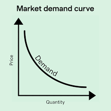
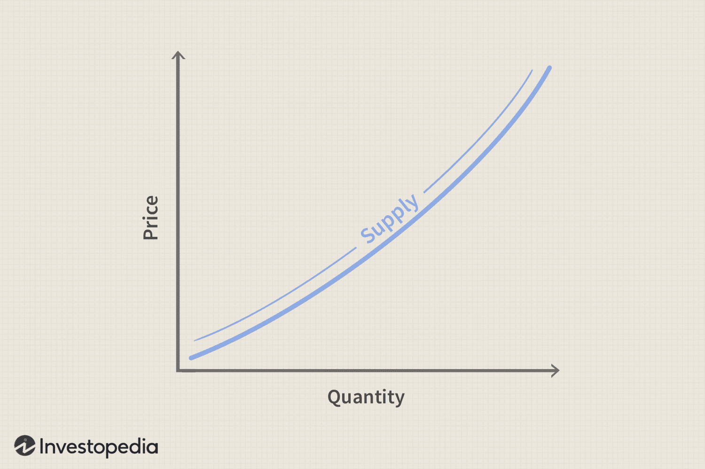
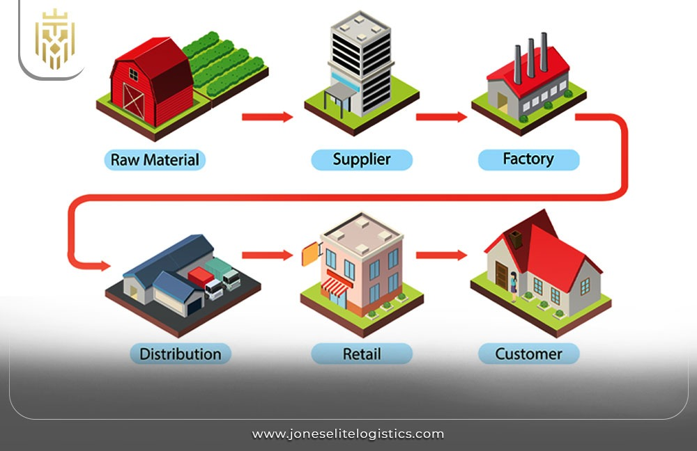
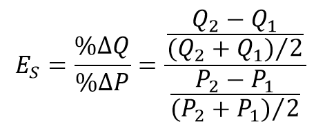
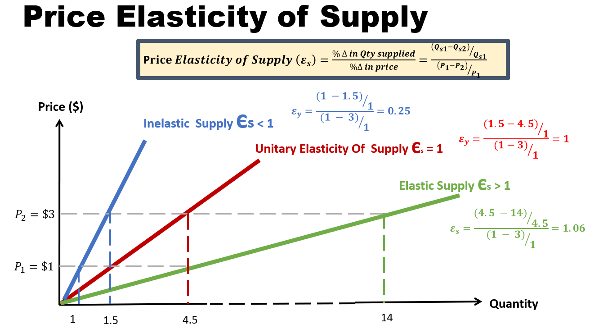
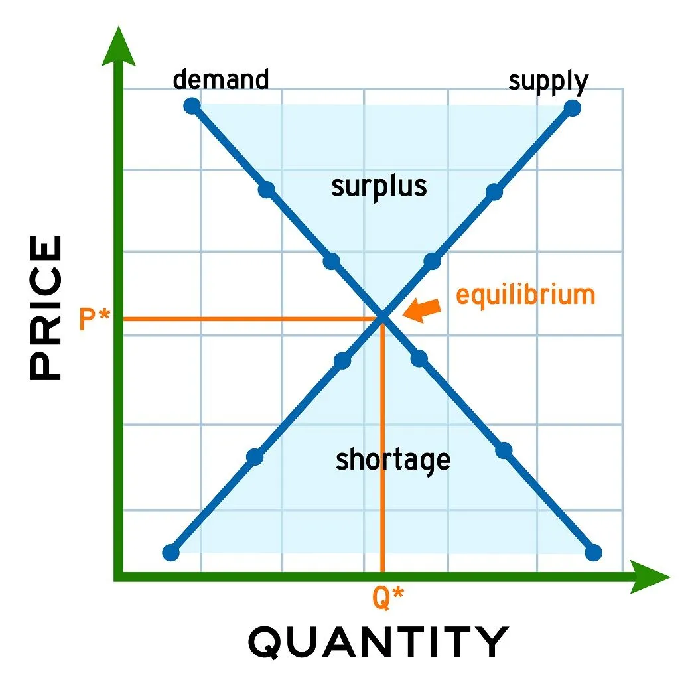
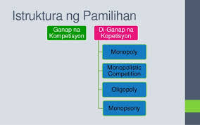
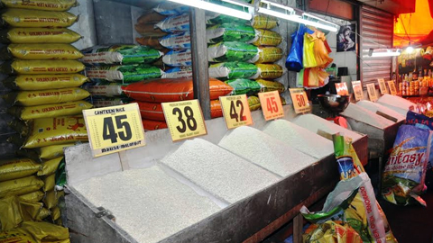

Kahulugan ng Demand
Ang demand ay tumutukoy sa kakayahan at kagustuhan ng mamimili na bumili ng produkto o serbisyo sa isang takdang presyo at panahon. Hindi lahat ng gusto ay demand – dapat ay may kakayahang bumili (purchasing power).
Formula: Demand = KAGUSTUHAN + KAKAYAHAN
Market Demand
Individual Demand: demand ng isang mamimili
Market Demand: pinagsama-samang demand ng lahat ng mamimili sa pamilihan
Halimbawa: Kung si Ana ay bibili ng 2 kilo ng bigas sa ₱50, si Ben 3 kilo, at si Carla 5 kilo → kabuuang market demand = 10 kilo sa ₱50.
Demand Function
Ipinapakita ang relasyon ng presyo (P) at dami ng demand (Qd) sa pamamagitan ng ekwasyon:
Qd = a − bP
Kung saan:
Qd = dami ng demand
a = pinakamataas na demand kung libre ang presyo
b = slope o pagbabago sa demand sa bawat pagbabago ng presyo
P = presyo
Halimbawa: Qd = 100 − 5P. Kung P = ₱10 → Qd = 50.
Batas ng Demand
Kapag tumaas ang presyo, bumababa ang dami ng demand; kapag bumaba ang presyo, tumataas ang dami ng demand (ceteris paribus). Magkasalungat ang relasyon ng presyo at demand.
Pagbabago sa Dami ng Demand (Movement Along the Curve)
Nangyayari kapag presyo lamang ang nagbago.
- Pagtaas sa Dami ng Demand → kapag bumaba ang presyo
- Pagbaba sa Dami ng Demand ↓ kapag tumaas ang presyo
Pagbabago sa Demand (Shift of the Curve)
- Pagtaas ng Demand (Shift Right) → tumaas ang kita, dumami ang mamimili, tumaas ang popularidad, bumaba ang presyo ng complementary goods, tumaas ang presyo ng substitute goods
- Pagbaba ng Demand (Shift Left) ← bumaba ang kita, nabawasan ang mamimili, nawala sa uso, tumaas ang presyo ng complementary goods, bumaba ang presyo ng substitute goods
Elastisidad ng Demand (Price Elasticity of Demand – EP/PED)
Sukat kung gaano kasensitibo ang mamimili sa pagbabago ng presyo.
Formula (Midpoint / Arc Method):
EP = [(Q2 − Q1) / ((Q1 + Q2) / 2)] ÷ [(P2 − P1) / ((P1 + P2) / 2)]
Halimbawa: Presyo = ₱40 → ₱50, Demand = 100 → 80
EP = (80 − 100)/100 ÷ (50 − 40)/40 → Di-Elastic
Mga Uri ng Elastisidad ng Demand
- Ganap na Di-Elastic (EP = 0) → Hindi nagbabago ang demand kahit magbago ang presyo (hal. gamot, asin)
- Di-Elastic (EP < 1) → Kaunting pagbabago sa demand kahit magbago ang presyo (hal. bigas, tubig)
- Unitary Elastic (EP = 1) → Pantay ang porsiyento ng pagbabago ng presyo at demand (hal. karaniwang produkto)
- Elastic (EP > 1) → Malaking pagbabago ng demand kahit maliit ang pagbabago ng presyo
- Ganap na Elastic (EP = ∞) → Kaunting pagtaas sa presyo ay nagdudulot ng pagkawala ng demand (hal. Coke vs Pepsi)
Mga Salik na Nakaaapekto sa Elastisidad
1. Panlasa / Kagustuhan
2. Kita
3. Populasyon
4. Presyo ng Magkaugnay na Produkto
5. Okasyon
6. Ekspektasyon
Buod ng Lesson 1 – Demand
- Demand = kagustuhan + kakayahan
- Market Demand = kabuuang demand ng lahat
- Demand Function = matematikal na relasyon ng presyo at demand
- Batas ng Demand = inverse relationship ng presyo at demand
- Pagbabago sa Dami ng Demand = movement along curve
- Pagbabago sa Demand = shift of curve
- Pagtaas ng Demand = kurba shift right →
- Pagbaba ng Demand = kurba shift left ←
- Elastisidad ng Demand (EP/PED) = sukatan ng pagtugon sa presyo
- Mga Uri ng Elastisidad = ganap na di-elastic, di-elastic, unitary, elastic, ganap na elastic

Lesson 2 – Supply
Kahulugan ng Supply
Ang supply ay tumutukoy sa dami ng produkto o serbisyo na handang ipagbili ng mga prodyuser sa isang takdang presyo at panahon.
Batas ng Supply (Law of Supply)
Kapag tumaas ang presyo, tataas ang dami ng supply → kapag bumaba ang presyo, bababa ang dami ng supply (ceteris paribus). Direktang relasyon ang presyo at supply.
Supply Schedule at Supply Curve
- Supply Schedule – talaan ng dami ng produkto na handang ipagbili sa bawat presyo.
- Supply Curve – grapikong representasyon ng supply schedule; pataas ang kurba dahil tumataas ang supply kapag tumataas ang presyo.
Pagtaas ng Supply
- Nangyayari kapag ibang salik bukod sa presyo ay nagdulot ng pagtaas ng dami ng supply.
- Lumilipat ang buong kurba ng supply pakanan →
- Halimbawa: Pagtaas ng teknolohiya, pagbaba ng presyo ng hilaw na materyales, pagdami ng prodyuser.
Pagbaba ng Supply
- Nangyayari kapag ibang salik bukod sa presyo ay nagdulot ng pagbaba ng dami ng supply.
- Lumilipat ang kurba ng supply pakaliwa ←
- Halimbawa: Pagtaas ng gastos sa produksiyon, kakulangan sa hilaw na materyales, kalamidad.
Paggalaw sa Iisang Kurba ng Supply
- Nangyayari kapag nagbago ang presyo lamang ng produkto.
- Pagtaas ng quantity supplied ↑ paggalaw pataas sa kurba.
- Pagbaba ng quantity supplied ↓ paggalaw pababa sa kurba.
Elastisidad ng Supply (Price Elasticity of Supply – EP/Es)
Sukat kung gaano kasensitibo ang dami ng supply sa pagbabago ng presyo.
Formula (Midpoint / Arc Method):
Es = [(Q2 − Q1) / ((Q1 + Q2) / 2)] ÷ [(P2 − P1) / ((P1 + P2) / 2)]
Q1 = dating dami supplied
Q2 = bagong dami supplied
P1 = dating presyo
P2 = bagong presyo
Interpretasyon ng Resulta
Es = 0 → Ganap na Di-Elastic – hindi nagbabago ang supply kahit magbago ang presyo
Es < 1 → Di-Elastic – kaunting pagbabago ng supply kahit magbago ang presyo
Es = 1 → Unitary Elastic – pantay ang porsiyento ng pagbabago ng presyo at supply
Es > 1 → Elastic – malaking pagbabago ng supply kahit maliit ang pagbabago ng presyo
Es = ∞ → Ganap na Elastic – kaunting pagtaas sa presyo ay nagdudulot ng malaking pagtaas ng supply
Mga Salik na Nakaaapekto sa Supply
1. Presyo ng produkto
2. Presyo ng input / hilaw na materyales
3. Teknolohiya
4. Bilang ng prodyuser
5. Inaasahang presyo sa hinaharap
6. Panahon o klima
7. Patakaran ng pamahalaan (buwis, subsidy, regulasyon)
Buod ng Lesson 2 – Supply
- Supply = dami ng produkto na handang ipagbili
- Batas ng Supply = direktang relasyon ng presyo at supply
- Pagtaas ng Supply = kurba shift right →
- Pagbaba ng Supply = kurba shift left ←
- Paggalaw sa iisang kurba = pagbabago ng quantity supplied dahil sa presyo lamang
- Elastisidad ng Supply = sukatan ng pagtugon ng supply sa pagbabago ng presyo
- Uri ng Elastisidad ng Supply = ganap na di-elastic, di-elastic, unitary, elastic, ganap na elastic


Lesson 3 – Price Elasticity
Kahulugan ng Price Elasticity
Ang price elasticity of demand (PED) ay sukatan kung gaano kasensitibo ang dami ng demand sa pagbabago ng presyo ng produkto. Sinusukat nito kung gaano kalaki ang epekto ng pagbabago ng presyo sa dami ng demand.
Formula (Midpoint / Arc Method):
PED = [(Q2 − Q1) / ((Q1 + Q2) / 2)] ÷ [(P2 − P1) / ((P1 + P2) / 2)]
Q1 = dating dami demanded
Q2 = bagong dami demanded
P1 = dating presyo
P2 = bagong presyo
Interpretasyon ng PED
- PED = 0 → Ganap na Di-Elastic – hindi nagbabago ang demand kahit magbago ang presyo
- PED < 1 → Di-Elastic – kaunting pagbabago ng demand kahit magbago ang presyo
- PED = 1 → Unitary Elastic – pantay ang porsiyento ng pagbabago ng presyo at demand
- PED > 1 → Elastic – malaking pagbabago ng demand kahit maliit ang pagbabago ng presyo
- PED = ∞ → Ganap na Elastic – kaunting pagtaas sa presyo ay nagdudulot ng pagkawala ng demand
Mga Salik na Nakaaapekto sa Price Elasticity
1. Kakayahan ng mamimili / Income
2. Availability ng substitute goods
3. Necessity vs Luxury ng produkto
4. Proporsyon ng kita na ginugugol sa produkto
5. Panahon / panahon ng reaksyon ng mamimili
6. Brand loyalty
Halimbawa:
- Bigas (necessity) → Di-elastic demand
- Gadgets / Luho (luxury) → Elastic demand
Buod ng Lesson 3 – Price Elasticity
- Sukatan ng pagtugon ng demand sa pagbabago ng presyo
- Formula: PED = [(Q2 − Q1) / ((Q1 + Q2) / 2)] ÷ [(P2 − P1) / ((P1 + P2) / 2)]
- Uri ng Elastisidad: ganap na di-elastic, di-elastic, unitary, elastic, ganap na elastic
- Mga Salik: kita, substitutes, necessity vs luxury, bahagi ng kita, panahon, brand loyalty


Lesson 4 – Market Equilibrium
Kahulugan ng Market Equilibrium
Ang market equilibrium ay ang punto kung saan ang dami ng demand at dami ng supply ay magkapantay sa isang takdang presyo. Dito, walang labis o kakulangan sa pamilihan.
Equilibrium Price at Quantity
- Equilibrium Price (Pe) → presyo kung saan nagtatagpo ang demand at supply.
- Equilibrium Quantity (Qe) → dami na binibili at binebenta sa equilibrium price.
Paano Nakukuha ang Equilibrium
1. Pagsamahin ang demand at supply schedules o curves.
2. Hanapin ang presyo kung saan Qd = Qs.
3. Presyo kung saan nagkakatugma ang demand at supply → Pe.
4. Dami sa puntong iyon → Qe.
Surplus at Shortage
- Surplus (Excess Supply) → kapag P > Pe, dami ng supply > dami ng demand.
Solusyon: Bumababa ang presyo → bababa ang supply at tataas ang demand hanggang maabot ang Pe.
- Shortage (Excess Demand) → kapag P < Pe, dami ng demand > dami ng supply.
Solusyon: Tumaas ang presyo → bababa ang demand at tataas ang supply hanggang maabot ang Pe.
Pagbabago sa Equilibrium
- Shift ng Demand Curve → nagdudulot ng pagbabago sa Pe at Qe.
- Pagtaas ng Demand → Pe → Qe tumataas
- Pagbaba ng Demand → Pe → Qe bumababa
- Shift ng Supply Curve → nagdudulot ng pagbabago sa Pe at Qe.
- Pagtaas ng Supply → Pe bumababa, Qe tumataas
- Pagbaba ng Supply → Pe tumataas, Qe bumababa
Buod ng Lesson 4 – Market Equilibrium
- Equilibrium occurs kapag Qd = Qs
- Equilibrium Price = Pe
- Equilibrium Quantity = Qe
- Surplus > bawas presyo → equilibrium
- Shortage > taas presyo → equilibrium
- Shift sa demand o supply curve ay nagbabago ng equilibrium

Lesson 5 – Iba’t-ibang Estraktura ng Pamilihan
Kahulugan
Ang estraktura ng pamilihan ay tumutukoy sa uri at katangian ng kompetisyon sa pagitan ng mga prodyuser sa pamilihan.
Mga Uri ng Estraktura
1. Perfect Competition
- Maraming prodyuser at mamimili
- Homogeneous o pare-parehong produkto
- Walang kontrol sa presyo
- Halimbawa: palengke, bigas
2. Monopolistic Competition
- Maraming prodyuser
- Di-homogeneous o bahagyang magkakaiba ang produkto
- Kontrol sa presyo limitado
- Halimbawa: mga restaurant, clothing brands
3. Oligopoly
- Iilang prodyuser lamang
- Produkto maaaring homogeneous o differentiated
- Malaking impluwensya sa presyo
- Halimbawa: telecommunication companies, soft drinks
4. Monopoly
- Isang prodyuser lamang
- Walang close substitutes
- Ganap na kontrol sa presyo
- Halimbawa: Meralco (power distribution), PLDT (historical monopoly)
Katangian ng Market Structure
- Bilang ng prodyuser
- Uri ng produkto
- Antas ng kompetisyon
- Kontrol sa presyo
- Barriers sa entry
Buod ng Lesson 5 – Estraktura ng Pamilihan
- Perfect Competition → maraming prodyuser, pare-parehong produkto, walang kontrol sa presyo
- Monopolistic Competition → maraming prodyuser, bahagyang magkakaiba ang produkto
- Oligopoly → iilang prodyuser, may impluwensya sa presyo
- Monopoly → isang prodyuser, ganap na kontrol sa presyo
- Market structure nakaaapekto sa presyo, kalidad, at dami ng produkto


Lesson 6 – Bahaging Ginagampanan ng Pamahalaan
Kahalagahan ng Pamahalaan sa Ekonomiya
- Pamahalaan ay tumutulong sa pagpapanatili ng kaayusan sa pamilihan
- Nagbibigay proteksyon sa mamimili at prodyuser
- Nagpapatupad ng regulasyon upang maiwasan ang monopolisasyon at labis na kompetisyon
Mga Bahagi ng Pamahalaan
1. Pagbibigay ng Buwis (Taxes)
- Pinagkukunan ng pondo para sa pampublikong serbisyo
- Nakakaapekto sa presyo at demand ng produkto
2. Pagbibigay ng Subsidy
- Pinapababa ang gastos ng prodyuser upang mas maraming supply
- Halimbawa: subsidy sa bigas, kuryente, edukasyon
3. Pagkontrol sa Presyo (Price Control)
- Price Ceiling → pinakamataas na presyo (hal. gamot)
- Price Floor → pinakamababang presyo (hal. minimum wage)
4. Regulasyon sa Kalikasan at Kaligtasan
- Environmental regulations, labor laws
- Tinitiyak ang kaligtasan at sustainability
5. Pagbibigay ng Pampublikong Kalakal at Serbisyo
- Halimbawa: kalsada, paaralan, ospital, kuryente
6. Pagpapatupad ng Patakaran sa Kalakalan
- Tariffs, import/export regulations
- Proteksyon sa lokal na industriya at ekonomiya
Buod ng Lesson 6 – Bahaging Ginagampanan ng Pamahalaan
- Pamahalaan ay tagapangalaga ng kaayusan at proteksyon
- Tools: buwis, subsidy, price control, regulasyon, pampublikong serbisyo, kalakalan
- Layunin: mapabuti ang ekonomiya, protektahan ang mamimili at prodyuser, at mapanatili ang kaayusan sa pamilihan